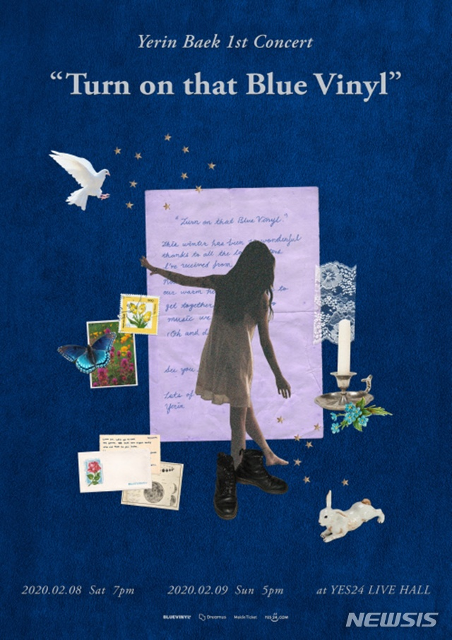

콘서트 2020-01-03 백예린, 데뷔 첫 단독 콘서트...2월 '턴 온 댓 블루 바이닐'
by 신효령 / 뉴시스 | Photos by 블루바이닐 ...
가수 백예린이 데뷔 후 처음으로 단독 콘서트를 연다.
3일 소속사 블루 바이닐에 따르면, 백예린은 오는 2월 8∼9일 서울 광진구 예스24라이브홀에서 단독 콘서트 '턴 온 댓 블루 바이닐'(Turn on that Blue Vinyl)을 열고 팬들을 만난다.
백예린은 직접 기획에 참여하며 준비에 매진하고 있다.
백예린은 소속사를 통해 "블루 바이닐을 틀어줘요. 사랑스러운 답장들을 받아 정말이지 행복한 겨울이에요. 서로 따뜻한 마음을 주고받았으니, 이제는 만나서 좋아하는 노래들을 같이 들었으면 좋겠어요. 춤도 추고요! 그 날 만나요. 사랑을 담아, 예린 올림"이라는 짧은 편지글을 전했다.
백예린은 JYP에서 SBS TV 'K팝 스타' 시즌 1 우승자인 박지민과 2012년 듀오 '15&'로 데뷔했다. SBS TV '스타킹'을 통해 주목 받은 음악 영재로, 지난해 9월 12년간 몸 담은 JYP를 나왔다.
이후 독립레이블 '블루 바이닐'을 세우고 지난달 정규앨범 '에브리 레터 아이 센트 유'(Every Ietter I sent you.)를 발표했다. 타이틀곡 '스퀘어(Square)(2017)'는 국내 주요 차트 정상을 휩쓸며 홀로서기에 성공했다.